개념 학습
중첩 제어 구조
다양한 상황이 발생하는 실생활 문제를 해결하기 위해서는 하나의 제어 구조가 아닌 여러 가지 제어 구조를 복합적으로 활용하여 프로그래밍해야 한다.
그래서 조건문 안에 조건문이 포함되어 있거나 반복문 안에 조건문이 포함되는 등, 제어 구조 내부에 다른 제어 구조를 포함하여 작성하는데 이를 중첩 제어 구조라 한다.
-
반복문 안에 선택문
(또는 선택문 안에 반복문) -
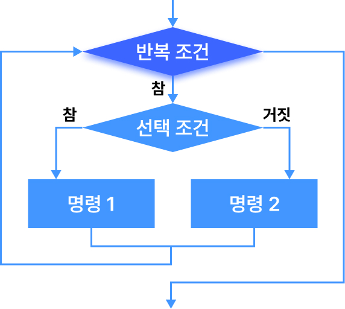 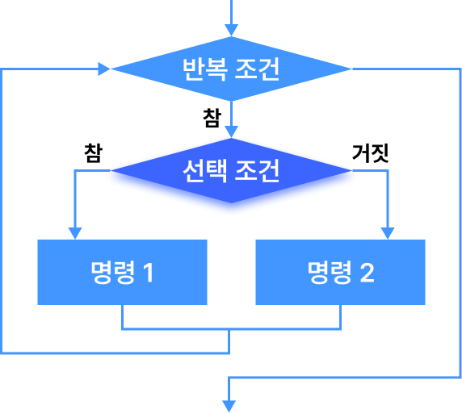 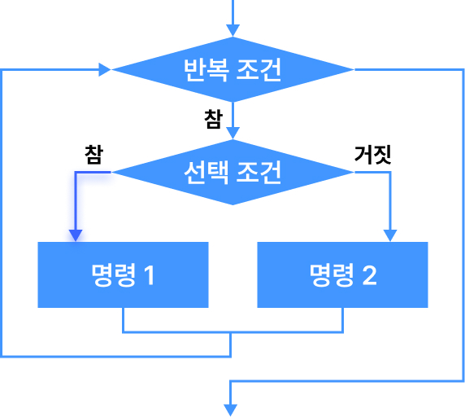 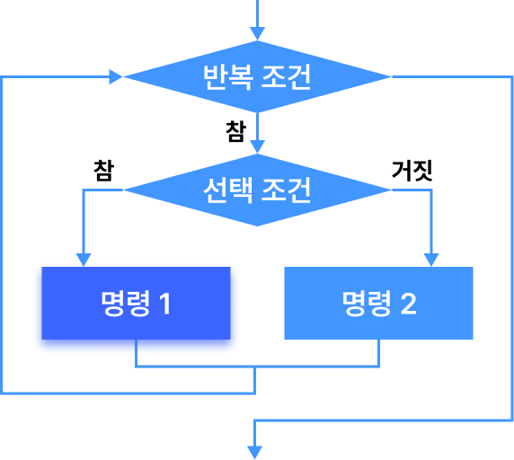 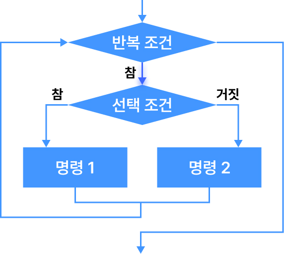 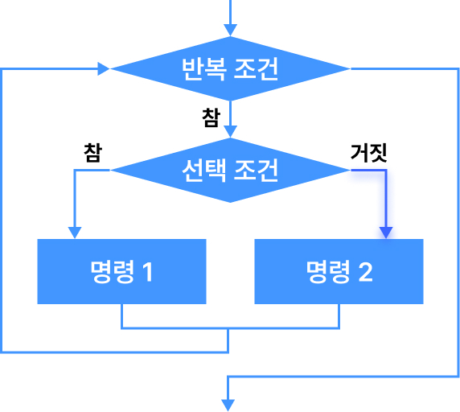 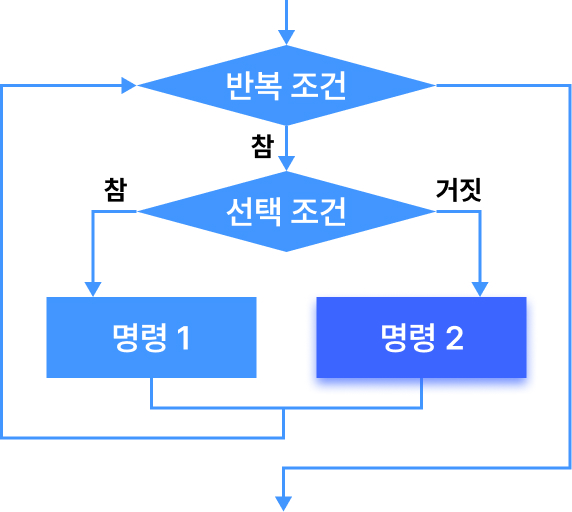 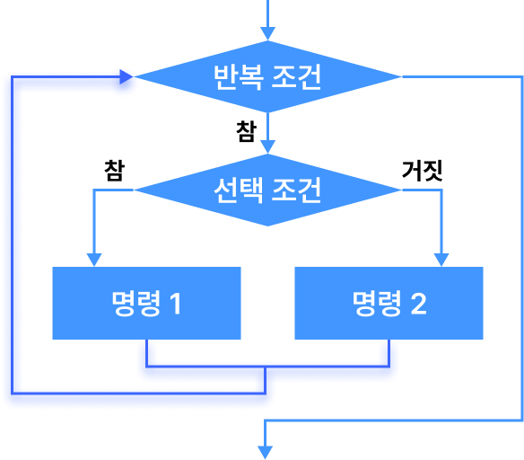 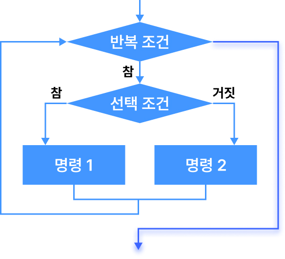
- 반복문 안에 반복문
-
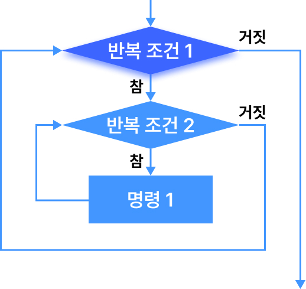 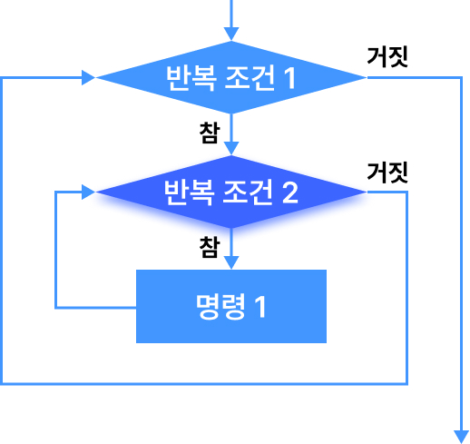 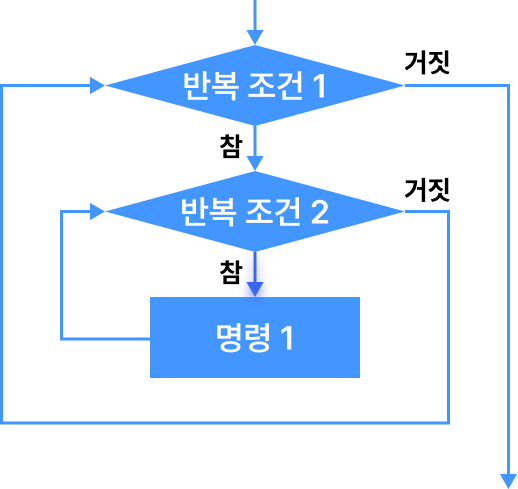 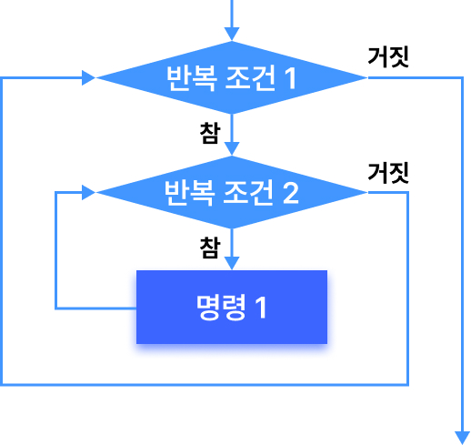 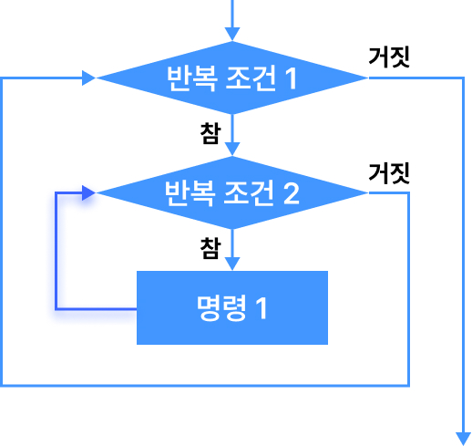 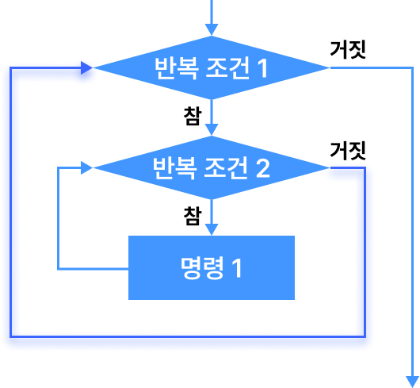 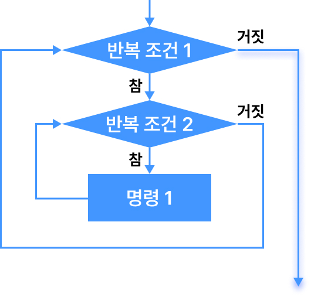
- 선택문 안에 선택문
-
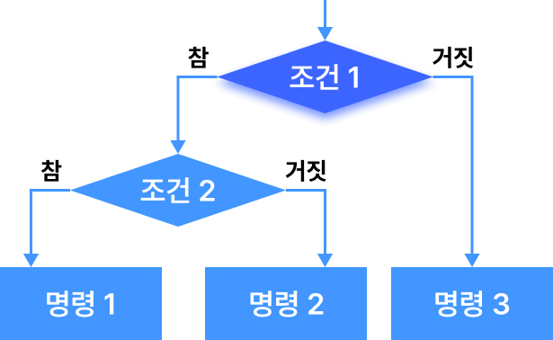 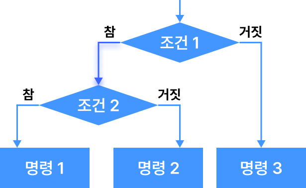 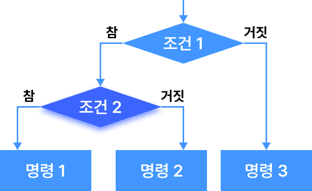 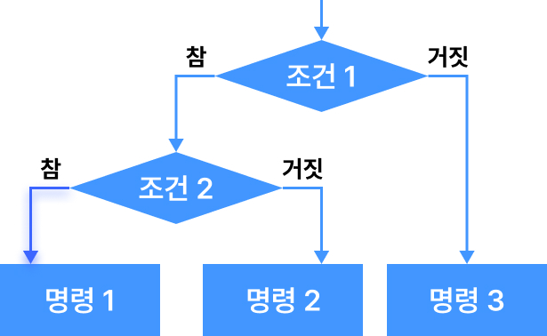 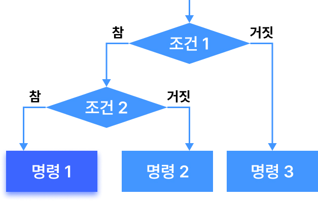 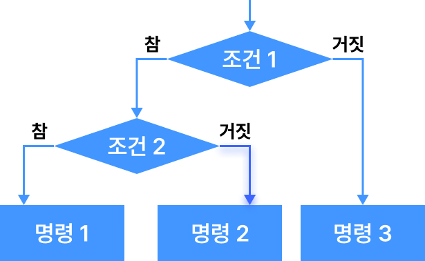 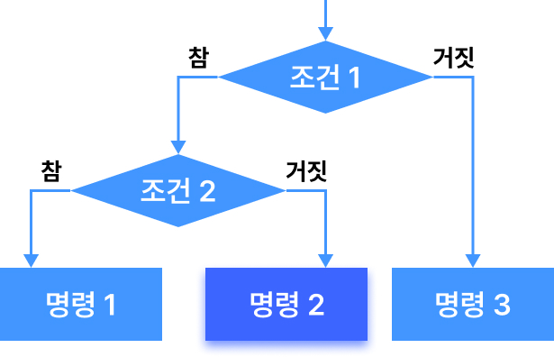 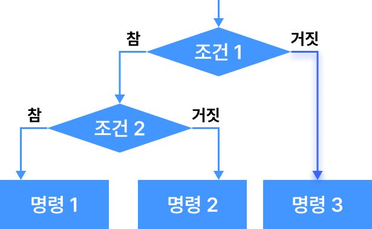 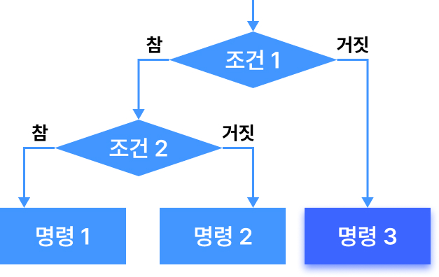